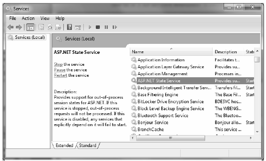

At this point in the chapter, you have examined numerous ways to remember information about your users. As you have seen, view state and application, cache, session, and cookie data are manipulated programmatically in more or less the same way (via a class indexer). As you have also seen, Global.asax has methods that allow you to intercept and respond to events that occur during your web application’s lifetime.
By default, ASP.NET will store session state in-process. The plus side is that access to the information is as fast as possible. However, the downside is that if this AppDomain crashes (for whatever reason), all of the user’s state data is destroyed. Furthermore, when you store state data as an in-process *.dll, you cannot interact with a networked web farm. This default mode of storage works just fine if your web application is hosted by a single web server. As you might guess, however, this model is not ideal for a farm of web servers, given that session state is “trapped” within a given AppDomain.
Under ASP.NET, you can instruct the runtime to host the session state *.dll in a surrogate process named the ASP.NET session state server (aspnet_state.exe). When you do so, you are able to offload the *.dll from aspnet_wp.exe into a unique *.exe, which can be located on any machine within the web farm. Even if you intend to run the aspnet_state.exe process on the same machine as the web server, you gain the benefit of partitioning the state data in a unique process (as it is more durable).
To make use of the session state server, the first step is to start the aspnet_state.exe Windows service on the target machine by typing the following in a Visual Studio 2010 Command Prompt window (note that you will need admin privileges to do so):
net start aspnet_state
Alternatively, you can start aspnet_state.exe using the Services applet accessed from the Administrative Tools folder of the Control Panel, as shown in Figure 34-9.
Figure 34-9 Starting aspnet_state.exe using the Services applet
The key benefit of this approach is that you can use the Properties window to configure aspnet_state.exe to start automatically when the machine boots up. In any case, once the session state server is running, add the following <sessionState> element of your Web.config file as follows:
<system.web> <sessionState mode="StateServer" stateConnectionString="tcpip=127.0.0.1:42626" sqlConnectionString="data source=127.0.0.1;Trusted_Connection=yes" cookieless="false" timeout="20" /> ... </system.web>
That’s it! At this point, the CLR will host session-centric data within aspnet_state.exe. In this way, if the AppDomain hosting the web application crashes, the session data is preserved. Moreover, note that the <sessionState> element can also support a stateConnectionString attribute. The default TCP/IP address value (127.0.0.1) points to the local machine. If you would rather have the .NET runtime use the aspnet_state.exe service located on another networked machine (again, think web farms), you are free to update this value.
Finally, if you require the highest degree of isolation and durability for your web application, you may choose to have the runtime store all your session state data within Microsoft SQL Server. The appropriate update to the Web.config file is simple:
<sessionState mode="SQLServer" stateConnectionString="tcpip=127.0.0.1:42626" sqlConnectionString="data source=127.0.0.1;Trusted_Connection=yes" cookieless="false" timeout="20" />
However, before you attempt to run the associated web application, you need to ensure that the target machine (specified by the sqlConnectionString attribute) has been properly configured. When you install the .NET Framework 4.0 SDK (or Visual Studio 2010), you will be provided with two files named InstallSqlState.sql and UninstallSqlState.sql, located by default under C:\Windows\Microsoft.NET\Framework\<version>. On the target machine, you must run the InstallSqlState.sql file using a tool such as the Microsoft SQL Server Management Studio (which ships with Microsoft SQL Server).
Once you have run InstallSqlState.sql, you will find a new SQL Server database has been created (ASPState), which contains a number of stored procedures called by the ASP.NET runtime, as well as a set of tables used to store the session data itself. (Also, the tempdb database has been updated with a set of tables for swapping purposes.) As you’d guess, configuring your web application to store session data within SQL Server is the slowest of all possible options. The benefit is that user data is as durable as possible (even if the web server is rebooted).
Note If you make use of the ASP.NET session state server or SQL Server to store your session data, you must make sure that any custom types placed in the HttpSessionState object have been marked with the [Serializable] attribute.